Στο παρόν κεφάλαιο θ’ ασχοληθούμε πάλι με τις τουρκικές παραβιάσεις του Εθνικού Εναέριου Χώρου και των Εθνικών Χωρικών Υδάτων, οπότε θα χρησιμοποιήσουμε τους πίνακες enaerParab.xlsx και ydataParab.xlsx, αφού πρώτα διαγράψουμε τα προηγούμενα.
| ETOS | MHNAS | PARAB_EXY |
|---|---|---|
| 2013 | Ir | 37 |
| 2013 | Fe | 13 |
| 2013 | Mr | 36 |
| 2013 | Ar | 25 |
| 2013 | Ma | 54 |
| 2013 | In | 28 |
| 2013 | Il | 17 |
| 2013 | Au | 11 |
| 2013 | Se | 16 |
| 2013 | Ok | 25 |
| 2013 | No | 20 |
| 2013 | De | 59 |
| 2014 | Ir | 64 |
| 2014 | Fe | 47 |
| 2014 | Mr | 48 |
| 2014 | Ar | 39 |
| 2014 | Ma | 26 |
| 2014 | In | 5 |
| 2014 | Il | 13 |
| 2014 | Au | 35 |
| 2014 | Se | 26 |
| 2014 | Ok | 29 |
| 2014 | No | 21 |
| 2014 | De | 18 |
| 2015 | Ir | 10 |
| 2015 | Fe | 16 |
| 2015 | Mr | 38 |
| 2015 | Ar | 21 |
| 2015 | Ma | 65 |
| 2015 | In | 9 |
| 2015 | Il | 16 |
| 2015 | Au | 30 |
| 2015 | Se | 21 |
| 2015 | Ok | 22 |
| 2015 | No | 16 |
| 2015 | De | 35 |
| 2016 | Ir | 22 |
| 2016 | Fe | 27 |
| 2016 | Mr | 46 |
| 2016 | Ar | 39 |
| 2016 | Ma | 23 |
| 2016 | In | 22 |
| 2016 | Il | 32 |
| 2016 | Au | 41 |
| 2016 | Se | 23 |
| 2016 | Ok | 50 |
| 2016 | No | 39 |
| 2016 | De | 50 |
| 2017 | Ir | 116 |
| 2017 | Fe | 117 |
| 2017 | Mr | 168 |
| 2017 | Ar | 193 |
| 2017 | Ma | 290 |
| 2017 | In | 135 |
| 2017 | Il | 160 |
| 2017 | Au | 172 |
| 2017 | Se | 142 |
| 2017 | Ok | 189 |
| 2017 | No | 179 |
| 2017 | De | 137 |
| 2018 | Ir | 124 |
| 2018 | Fe | 120 |
| 2018 | Mr | 108 |
| 2018 | Ar | 119 |
| 2018 | Ma | 146 |
| 2018 | In | 92 |
| 2018 | Il | 141 |
| 2018 | Au | 134 |
| 2018 | Se | 122 |
| 2018 | Ok | 143 |
| 2018 | No | 113 |
| 2018 | De | 117 |
| 2019 | Ir | 111 |
| 2019 | Fe | 70 |
| 2019 | Mr | 83 |
| 2019 | Ar | 143 |
| 2019 | Ma | 239 |
| 2019 | In | 151 |
| 2019 | Il | 368 |
| 2019 | Au | 274 |
| 2019 | Se | 265 |
| 2019 | Ok | 187 |
| 2019 | No | 141 |
| 2019 | De | 171 |
| 2020 | Ir | 254 |
| 2020 | Fe | 229 |
| 2020 | Mr | 193 |
| 2020 | Ar | 182 |
| 2020 | Ma | 144 |
| 2020 | In | 115 |
| 2020 | Il | 366 |
| ETOS | MHNAS | PARAB_KEK | PARAB_EEX | OPL_SXHM | EMPLOKES | YPERPT_ETH_ED | SYNOLO_AER |
|---|---|---|---|---|---|---|---|
| 2009 | Ir | 65 | 106 | 37 | 13 | 7 | 250 |
| 2009 | Fe | 47 | 123 | 34 | 17 | 2 | 259 |
| 2009 | Mr | 92 | 152 | 36 | 26 | 3 | 306 |
| 2009 | Ar | 41 | 160 | 32 | 27 | 7 | 229 |
| 2009 | Ma | 121 | 163 | 35 | 8 | 2 | 281 |
| 2009 | In | 57 | 146 | 34 | 25 | 7 | 247 |
| 2009 | Il | 50 | 217 | 42 | 33 | 12 | 310 |
| 2009 | Au | 48 | 225 | 38 | 34 | 4 | 293 |
| 2009 | Se | 43 | 103 | 31 | 27 | 1 | 253 |
| 2009 | Ok | 42 | 69 | 25 | 18 | 0 | 204 |
| 2009 | No | 47 | 108 | 26 | 5 | 2 | 219 |
| 2009 | De | 50 | 106 | 25 | 4 | 4 | 227 |
| 2010 | Ir | 70 | 107 | 26 | 1 | 0 | 239 |
| 2010 | Fe | 35 | 84 | 28 | 0 | 1 | 220 |
| 2010 | Mr | 52 | 114 | 40 | 1 | 1 | 324 |
| 2010 | Ar | 45 | 77 | 27 | 0 | 0 | 239 |
| 2010 | Ma | 129 | 156 | 30 | 1 | 0 | 266 |
| 2010 | In | 56 | 97 | 34 | 1 | 0 | 292 |
| 2010 | Il | 58 | 128 | 46 | 7 | 4 | 316 |
| 2010 | Au | 43 | 87 | 34 | 0 | 0 | 246 |
| 2010 | Se | 46 | 105 | 29 | 2 | 1 | 233 |
| 2010 | Ok | 58 | 92 | 23 | 0 | 1 | 215 |
| 2010 | No | 74 | 98 | 22 | 0 | 4 | 206 |
| 2010 | De | 63 | 94 | 28 | 0 | 8 | 234 |
| 2011 | Ir | 70 | 104 | 34 | 0 | 1 | 274 |
| 2011 | Fe | 46 | 84 | 33 | 0 | 0 | 265 |
| 2011 | Mr | 41 | 71 | 31 | 0 | 0 | 245 |
| 2011 | Ar | 47 | 81 | 31 | 0 | 0 | 254 |
| 2011 | Ma | 128 | 133 | 22 | 0 | 0 | 232 |
| 2011 | In | 41 | 74 | 25 | 0 | 0 | 212 |
| 2011 | Il | 46 | 81 | 32 | 0 | 0 | 198 |
| 2011 | Au | 41 | 86 | 30 | 0 | 0 | 192 |
| 2011 | Se | 43 | 89 | 30 | 5 | 0 | 199 |
| 2011 | Ok | 31 | 54 | 14 | 10 | 2 | 127 |
| 2011 | No | 27 | 42 | 9 | 1 | 1 | 96 |
| 2011 | De | 59 | 63 | 16 | 0 | 0 | 147 |
| 2012 | Ir | 66 | 84 | 16 | 1 | 1 | 146 |
| 2012 | Fe | 32 | 53 | 10 | 0 | 1 | 81 |
| 2012 | Mr | 93 | 69 | 21 | 0 | 0 | 174 |
| 2012 | Ar | 37 | 50 | 16 | 0 | 0 | 110 |
| 2012 | Ma | 104 | 107 | 19 | 0 | 0 | 194 |
| 2012 | In | 60 | 58 | 23 | 0 | 0 | 157 |
| 2012 | Il | 50 | 43 | 15 | 0 | 0 | 96 |
| 2012 | Au | 34 | 37 | 13 | 0 | 0 | 77 |
| 2012 | Se | 36 | 35 | 9 | 0 | 0 | 69 |
| 2012 | Ok | 35 | 31 | 9 | 0 | 0 | 75 |
| 2012 | No | 75 | 49 | 14 | 0 | 1 | 135 |
| 2012 | De | 45 | 30 | 11 | 0 | 0 | 91 |
| 2013 | Ir | 47 | 63 | 13 | 0 | 0 | 103 |
| 2013 | Fe | 47 | 63 | 9 | 0 | 0 | 88 |
| 2013 | Mr | 88 | 48 | 11 | 0 | 0 | 118 |
| 2013 | Ar | 40 | 45 | 8 | 0 | 1 | 74 |
| 2013 | Ma | 94 | 111 | 14 | 0 | 1 | 119 |
| 2013 | In | 34 | 31 | 9 | 0 | 0 | 62 |
| 2013 | Il | 48 | 56 | 14 | 0 | 2 | 105 |
| 2013 | Au | 29 | 34 | 11 | 0 | 1 | 76 |
| 2013 | Se | 48 | 45 | 14 | 0 | 3 | 109 |
| 2013 | Ok | 25 | 26 | 7 | 0 | 0 | 65 |
| 2013 | No | 52 | 69 | 11 | 0 | 2 | 99 |
| 2013 | De | 25 | 45 | 8 | 0 | 1 | 66 |
| 2014 | Ir | 71 | 239 | 18 | 0 | 2 | 138 |
| 2014 | Fe | 31 | 100 | 8 | 0 | 0 | 68 |
| 2014 | Mr | 47 | 109 | 13 | 0 | 2 | 105 |
| 2014 | Ar | 65 | 233 | 12 | 2 | 0 | 109 |
| 2014 | Ma | 136 | 426 | 14 | 0 | 2 | 156 |
| 2014 | In | 52 | 196 | 8 | 0 | 0 | 79 |
| 2014 | Il | 45 | 119 | 13 | 0 | 1 | 96 |
| 2014 | Au | 40 | 173 | 11 | 0 | 0 | 77 |
| 2014 | Se | 104 | 249 | 14 | 0 | 1 | 129 |
| 2014 | Ok | 45 | 125 | 11 | 0 | 3 | 88 |
| 2014 | No | 79 | 118 | 9 | 0 | 0 | 100 |
| 2014 | De | 86 | 157 | 14 | 6 | 3 | 124 |
| 2015 | Ir | 36 | 63 | 10 | 2 | 2 | 79 |
| 2015 | Fe | 35 | 97 | 11 | 0 | 5 | 84 |
| 2015 | Mr | 59 | 210 | 14 | 5 | 3 | 127 |
| 2015 | Ar | 65 | 173 | 10 | 5 | 2 | 136 |
| 2015 | Ma | 187 | 362 | 25 | 29 | 5 | 276 |
| 2015 | In | 66 | 167 | 16 | 14 | 1 | 143 |
| 2015 | Il | 61 | 153 | 10 | 5 | 10 | 111 |
| 2015 | Au | 39 | 83 | 5 | 4 | 0 | 73 |
| 2015 | Se | 70 | 135 | 8 | 5 | 1 | 87 |
| 2015 | Ok | 100 | 190 | 12 | 5 | 3 | 118 |
| 2015 | No | 60 | 75 | 6 | 1 | 0 | 80 |
| 2015 | De | 48 | 71 | 6 | 5 | 4 | 70 |
| 2016 | Ir | 68 | 83 | 5 | 3 | 2 | 89 |
| 2016 | Fe | 76 | 136 | 9 | 7 | 1 | 101 |
| 2016 | Mr | 69 | 109 | 5 | 4 | 0 | 77 |
| 2016 | Ar | 130 | 267 | 12 | 14 | 24 | 133 |
| 2016 | Ma | 157 | 321 | 11 | 6 | 6 | 159 |
| 2016 | In | 46 | 131 | 3 | 1 | 4 | 54 |
| 2016 | Il | 25 | 34 | 2 | 0 | 2 | 31 |
| 2016 | Au | 21 | 39 | 0 | 0 | 0 | 15 |
| 2016 | Se | 53 | 88 | 1 | 0 | 4 | 49 |
| 2016 | Ok | 69 | 176 | 7 | 4 | 4 | 78 |
| 2016 | No | 122 | 126 | 13 | 13 | 2 | 145 |
| 2016 | De | 66 | 161 | 18 | 16 | 8 | 85 |
| 2017 | Ir | 65 | 133 | 16 | 10 | 5 | 70 |
| 2017 | Fe | 81 | 257 | 26 | 8 | 11 | 83 |
| 2017 | Mr | 47 | 172 | 20 | 10 | 3 | 79 |
| 2017 | Ar | 65 | 254 | 18 | 20 | 3 | 97 |
| 2017 | Ma | 190 | 642 | 30 | 29 | 1 | 201 |
| 2017 | In | 71 | 202 | 21 | 25 | 5 | 96 |
| 2017 | Il | 59 | 187 | 20 | 17 | 4 | 84 |
| 2017 | Au | 111 | 346 | 26 | 15 | 2 | 139 |
| 2017 | Se | 134 | 343 | 34 | 16 | 0 | 168 |
| 2017 | Ok | 132 | 401 | 28 | 19 | 2 | 143 |
| 2017 | No | 93 | 212 | 7 | 6 | 3 | 89 |
| 2017 | De | 55 | 168 | 11 | 1 | 0 | 81 |
| 2018 | Ir | 94 | 353 | 11 | 7 | 1 | 89 |
| 2018 | Fe | 82 | 377 | 9 | 3 | 6 | 90 |
| 2018 | Mr | 70 | 190 | 18 | 9 | 0 | 68 |
| 2018 | Ar | 101 | 280 | 20 | 14 | 5 | 124 |
| 2018 | Ma | 202 | 361 | 16 | 10 | 0 | 239 |
| 2018 | In | 98 | 385 | 11 | 8 | 11 | 161 |
| 2018 | Il | 84 | 271 | 10 | 9 | 0 | 126 |
| 2018 | Au | 68 | 276 | 14 | 5 | 2 | 109 |
| 2018 | Se | 113 | 273 | 13 | 7 | 0 | 161 |
| 2018 | Ok | 214 | 381 | 25 | 15 | 4 | 236 |
| 2018 | No | 134 | 233 | 21 | 13 | 0 | 180 |
| 2018 | De | 141 | 325 | 28 | 28 | 18 | 192 |
| 2019 | Ir | 146 | 338 | 33 | 33 | 7 | 199 |
| 2019 | Fe | 81 | 245 | 17 | 16 | 0 | 124 |
| 2019 | Mr | 135 | 378 | 26 | 21 | 6 | 193 |
| 2019 | Ar | 136 | 281 | 23 | 32 | 5 | 184 |
| 2019 | Ma | 290 | 506 | 44 | 41 | 2 | 327 |
| 2019 | In | 127 | 663 | 28 | 30 | 10 | 137 |
| 2019 | Il | 118 | 355 | 29 | 39 | 6 | 161 |
| 2019 | Au | 95 | 341 | 27 | 39 | 11 | 106 |
| 2019 | Se | 132 | 413 | 21 | 15 | 3 | 171 |
| 2019 | Ok | 139 | 507 | 32 | 32 | 21 | 180 |
| 2019 | No | 199 | 342 | 25 | 28 | 9 | 208 |
| 2019 | De | 185 | 444 | 39 | 57 | 44 | 234 |
| 2020 | Ir | 189 | 597 | 55 | 69 | 62 | 261 |
| 2020 | Fe | 131 | 541 | 41 | 67 | 54 | 172 |
| 2020 | Mr | 181 | 425 | 36 | 30 | 58 | 190 |
| 2020 | Ar | 132 | 507 | 38 | 46 | 81 | 160 |
| 2020 | Ma | 93 | 420 | 27 | 36 | 47 | 120 |
| 2020 | In | 120 | 459 | 20 | 25 | 36 | 149 |
| 2020 | Il | 125 | 558 | 23 | 28 | 20 | 142 |
| 2020 | Au | 281 | 457 | 38 | 51 | 6 | 283 |
Είδαμε ότι η μέση τιμή των παραβιάσεων, η διάμεσος κτλ είναι αριθμοί ενδεικτικοί του συνόλου των τιμών των παραβιάσεων. Πόσο όμως το αντιπροσωπεύουν; Γράφοντας:
## [1] 190.3857βρίσκουμε ότι η μέση τιμή των παραβιάσεων είναι 190.3857143 παραβιάσεις το μήνα. Αν πχ το πλήθος των παραβιάσεων είναι από 180 έως 200 το μήνα, η μέση τιμή που βρήκαμε αντιπροσωπεύει επαρκέστατα καθεμία τιμή. Αν όμως οι τιμές είναι απλωμένες σε ένα πολύ ευρύτερο διάστημα, τότε η τιμή αυτή δεν είναι καθόλου αντιπροσωπευτική.
Εδώ θα εξετάσουμε διάφορους τρόπους με τους οποίους ανακαλύπτουμε πόσο απλωμένες είναι οι τιμές κάποιων παρατηρήσεων.
Το πιο απλό μέτρο διασποράς είναι το εύρος.
| Εύρος |
|---|
| Το εύρος ενός συνόλου μετρήσεων (δείγματος ή πληθυσμού) είναι η διαφορά της μικρότερης από την μεγαλύτερη τιμή. |
Για να βρούμε το εύρος στην R θα χρησιμοποιήσουμε την συνάρτηση
range(). Γράφοντας:
## [1] 26 663εξάγονται οι αριθμοί 26 και 663. Αυτοί είναι οι ανώτερη και η κατώτερη τιμή της λίστας των παραβιάσεων ΕΕΧ. Προφανώς, το εύρος θα είναι 663-26=637.
Δυστυχώς, το εύρος είναι αρκετά ευαίσθητο στις ακραίες τιμές. Αν, επί παραδείγματι, σ’ ένα μήνα έγιναν 1000 παραβιάσεις και σ’ έναν άλλο μόνο 1, το εύρος θα πάρει αυτομάτως την τιμή 999, χωρίς όμως αυτή να αντιπροσωπεύει κάτι ουσιαστικό, αφού αυτές οι ακραίες τιμές έγιναν μόνο δύο φορές.
| Τυπική απόκλιση |
|---|
| Η τυπική απόκλιση ενός συνόλου τιμών είναι ένα μέτρο της απόστασής τους από τη μέση τιμή τους. |
Η τυπική απόκλειση υπολογίζεται διαφορετικά, όταν μιλάμε για πληθυσμό
σε σχέση με όταν μιλάμε για δείγμα. Έτσι, η τυπική δειγματική τυπική
απόκλιση υπολογίζεται στην R μέσω της συνάρτησης sd().
Οπότε, γράφοντας:
## [1] 147.9733βρίσκουμε ότι η τυπική απόκλιση των παραβιάσεων ΕΕΧ είναι 147.9733393 παραβιάσεις.
Όπως αναφέραμε, η R υπολογίζει διαφορετικά την πληθυσμιακή τυπική απόκλιση. Για την ακρίβεια δεν έχει έτοιμη συνάρτηση για τον υπολογισμό της τυπικής απόκλισης πληθυσμού, οπότε πάλι θα χρειαστεί να την φτιάξουμε εμείς. Αυτό θα γίνει με την εντολή:
| Απομονωμένα σημεία |
|---|
| Μια τιμή από ένα σύνολο μετρήσεων (δείγματος ή πληθυσμού), η οποία είναι πολύ μεγάλη ή πολύ μικρή σε σχέση με τις υπόλοιπες ονομάζεται απομονωμένο σημείο. |
Η σημασία της τυπικής απόκλισης θα φανεί μέσα από τα απομονωμένα σημεία, μέσω του κάτωθι θεωρήματος.
Οτιδήποτε βρίσκεται σε απόσταση από την μέση τιμή μεγαλύτερη από τρεις τυπικές αποκλίσεις είναι πιθανό παράτυπο σημείο. Σχεδόν όλο το δείγμα (τουλάχιστον το 88.8%) βρίσκεται σε μικρότερη απόσταση από τρεις τυπικές αποκλίσεις.
Όσον αφορά τις παραβιάσεις ΕΕΧ, γράφοντας:
## [1] -253.5343## [1] 634.3057βρίσκουμε τους αριθμούς -253.5343036 και 634.3057322 που είναι τα άκρα του διαστήματος εκτός του οποίου εντός του οποίου, όπως είπαμε, βρίσκεται τουλάχιστον το 88.8% του δείγματος. Και όντως! Γράφοντας:
## # A tibble: 2 × 8
## ETOS MHNAS PARAB_KEK PARAB_EEX OPL_SXHM EMPLOKES YPERPT_ETH_ED SYNOLO_AER
## <dbl> <chr> <dbl> <dbl> <dbl> <dbl> <dbl> <dbl>
## 1 2017 Ma 190 642 30 29 1 201
## 2 2019 In 127 663 28 30 10 137βρίσκουμε ότι μόνο σε δύο μήνες (Μάιος 2017 και Ιούνιος 2019) ότι υπήρξαν παραβιάσεις εκτός του διαστήματος (-253.5343036, 634.3057322). Προφανώς δεν έχει αξία να ψάξουμε για τιμές πλήθους παραβιάσεων μικρότερες του -253.5343036.
Ενίοτε μπορεί να μη μας απασχολεί το εύρος όλων των μετρήσεων που διαθέτουμε, αλλά κάποιων κεντρικών τιμών τους. Το ενδοτεταρτημοριακό εύρος είναι σε αυτά τα πλαίσια και προσδιορίζει το εύρος του κεντρικού 50% των τιμών. Με άλλα λόγια:
| Ενδοτεταρτημοριακό εύρος |
|---|
| Το ενδοτεταρτημοριακό εύρος ενός συνόλου μετρήσεων (δείγματος ή πληθυσμού) είναι η διαφορά μεταξύ του 1ου και του 3ου ταταρτημορίου. |
Το ενδοτεταρτημοριακό εύρος στην R υπολογίζεται μέσω της συνάρτησης
IQR(). Δηλαδή, αν γράψουμε:
## [1] 189παίρνουμε σαν απάντηση την τιμή 189, όπερ σημαίνει ότι οι τιμές του κεντρικού 50% του δείγματος εκτείνονται σ’ ένα διάστημα πλάτους 189 μονάδων. Αυτό μπορούμε να το εξακριβώσουμε γράφοντας επίσης:
## 0% 25% 50% 75% 100%
## 26.0 82.5 133.0 271.5 663.0οπότε διαπιστώνουμε ότι το κεντρικό 50% του δείγματος είναι μεταξύ των τιμών 82.5 και 271.5, οι οποίες, προφανώς, απέχουν μεταξύ τους 189 μονάδες.
Με θηκόγραμμα απεικονίζονται τα τεταρτημόρια και τονίζονται τα απομονωμένα σημεία. Αυτό κείτεται παράλληλα με τον άξονα των τιμών της μεταβλητής μας και αποτελείται από:
ένα κουτί που αρχίζει από την ένδειξη του 1ου τεταρτημορίου και τελειώνει στην ένδειξη του 3ου,
μία γραμμή στη θέση της διαμέσου, η οποία χωρίζει το κουτί σε δύο κομμάτια,
δύο γραμμές ως συνέχεια του κουτιού, οι οποίες εκτείνονται έξω από τα όρια του 1ου και του 3ου τεταρτημορίου και καθεμία τους έχει μήκος ενάμιση ενδοτεταρτημοριακό εύρος, εκτός κι αν έχει ξεπεράσει την ανώτατη ή την κατώτατη τιμή (οπότε σταματάει εκεί),
τα σημεία έξω από τις προαναφερθείσες γραμμές είναι πιθανά απομονωμένα σημεία κι έχουν ξεχωριστή σήμανση.
Μια εύκολη και γρήγορη κατασκευή ενός θηκογράμματος γίνεται μέσω της
συνάρτησης boxplot(). Έτσι, δεν έχουμε παρά να
γράψουμε:
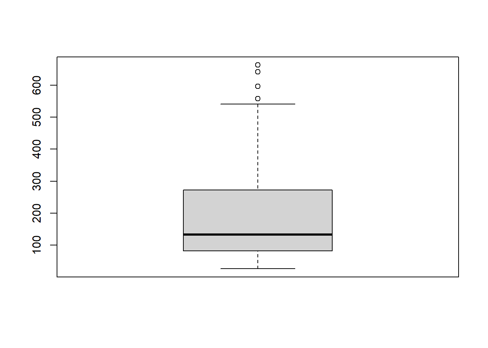
Αν το θέλουμε οριζόντιο, τότε γράφουμε:
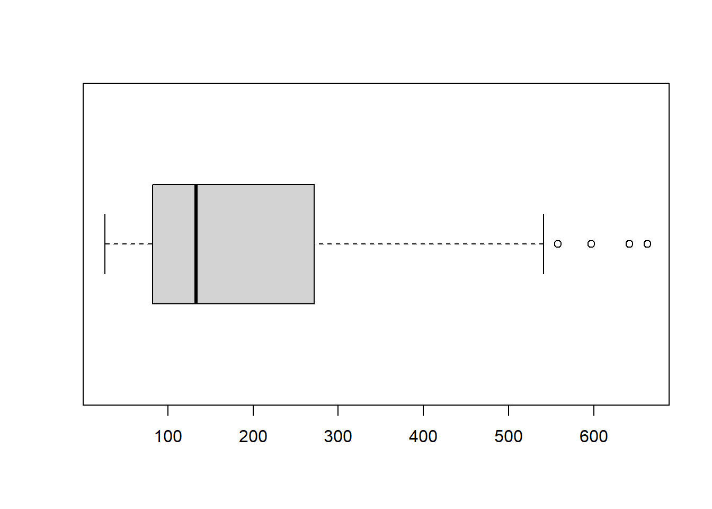
Για θηκογράμματα με περισσότερη ποικιλία θα απευθυνθούμε στο πακέτο
ggplot2, το οποίο επικαλούμαστε μέσω της εντολής
library(ggplot2).
Οπότε γράφουμε:
if(!require(ggplot2)){
install.packages("ggplot2")
library(ggplot2)
}
ParabEEXbox <- ggplot(enaerParab, aes(x="", y=PARAB_EEX))
ParabEEXbox + geom_boxplot()Οπότε έχουμε το θηκόγραμμα που ζητούσαμε. Ο ρόλος της παραμέτρου
x="" θα φανεί σε λίγο.
Στην περίπτωση που θελήσουμε το θηκόγραμμα οριζόντιο, δεν έχουμε παρά να γράψουμε:
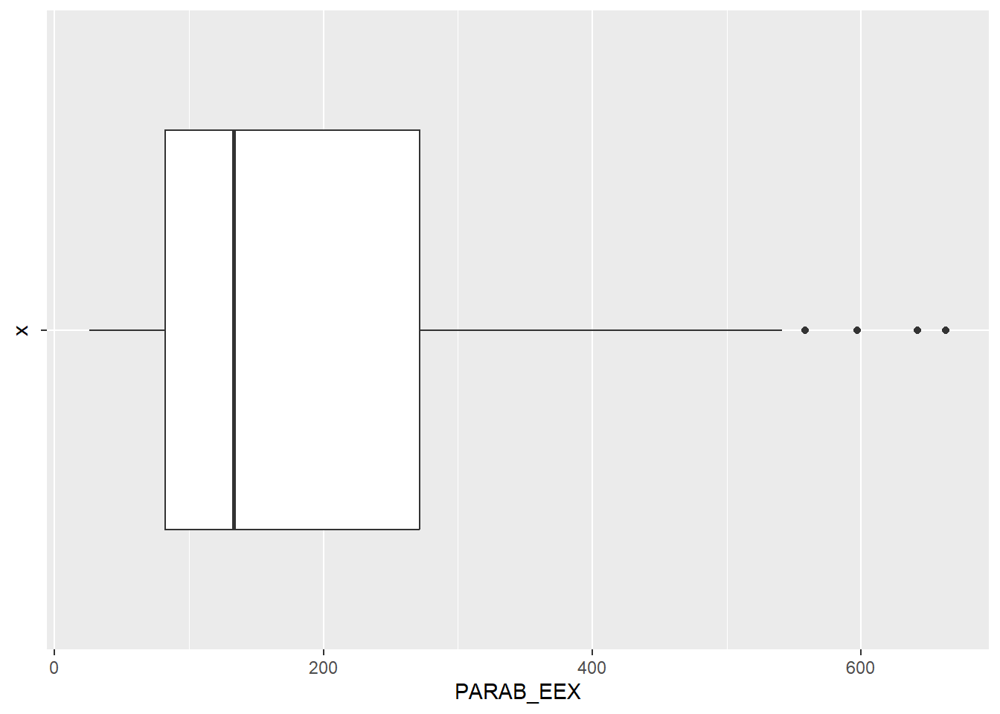
Δίνοντας κατάλληλες τιμές εντός του geom_boxplot() στα:
outlier.shape = και
outlier.size =
αλλάξουμε σχήμα και μέγεθος στα απομονωμένα σημεία. Συγκεκριμένα, γράφοντας:
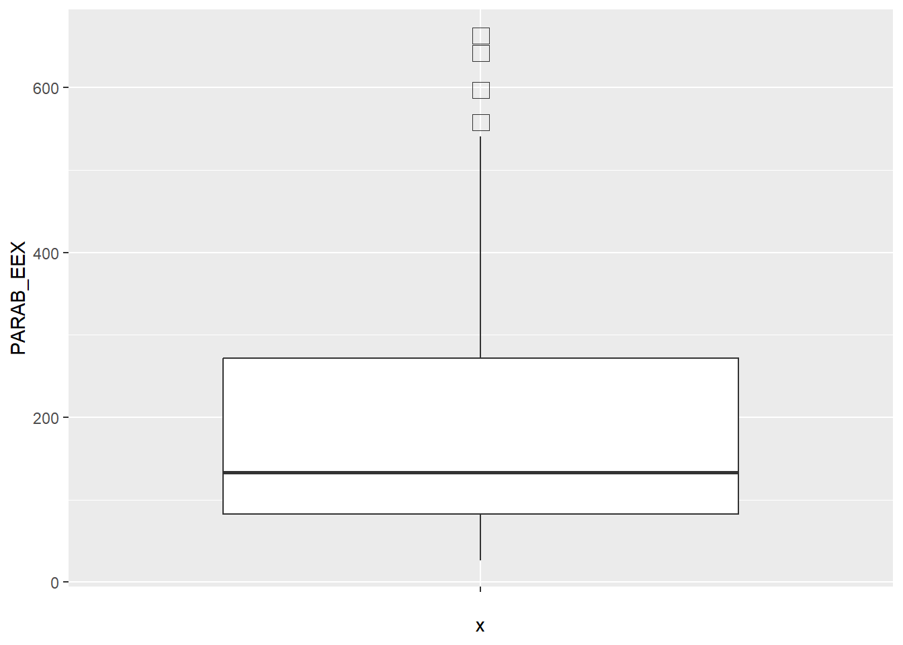
κάναμε τα απομονωμένα σημεία τετράγωνου σχήματος και πιο μεγάλα.
Ενίοτε μπορεί να θελήσουμε να παραστήσουμε το θηκόγραμμα σε συνδυασμό μ’ ένα σημειόγραμμα. Τοιαύτη περιπτώσει γράφουμε:
## Bin width defaults to 1/30 of the range of the data. Pick better value with `binwidth`.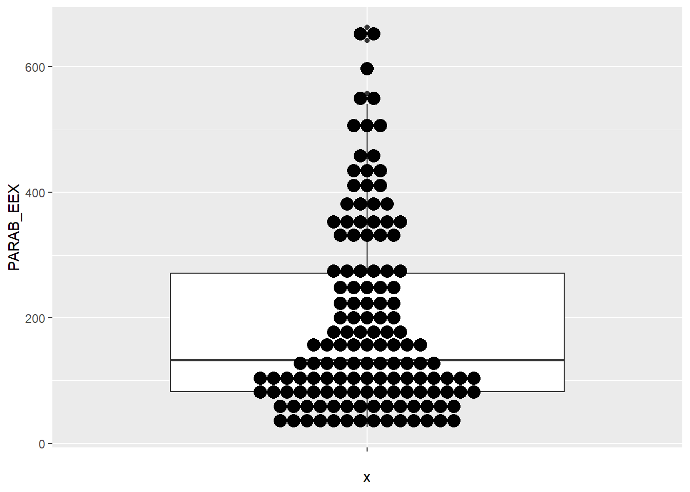
Το σημειόγραμμα θα ήταν πιο ενδιαφέρον, αν τα σημεία του ήταν ατάκτως
διατεταγμένα γύρω από τον άξονα συμμετρίας του θηκογράμματος. Αυτό θα
επιτευχθεί προσθέτοντας την επιλογή
geom_jitter(shape=16, size=1,position=position_jitter(0.2)).
Αν όμως γράψουμε κατευθείαν:
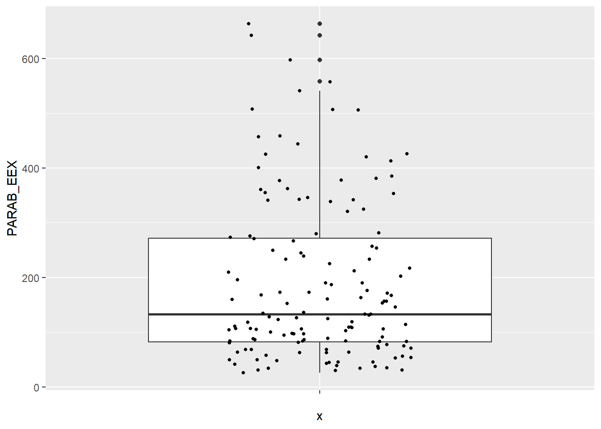
θα προκύψουν διπλάσια απομονωμένα σημεία, αφού θα υπάρχουν αυτά από
την επιλογή geom_boxplot() και αυτά από τα σημεία που μόλις
προσθέσαμε (αυτό μπορεί να γίνει φανερό αλλάζοντας το σχήμα ή το μέγεθος
των απομονωμένων σημείων μέσω των επιλογών shape= ή
size=).
Οπότε θα πρέπει να σβήσουμε τα απομονωμένα σημεία του θηκογράμματος,
πράγμα που θα γίνει είτε μέσω της αλλαγής
geom_boxplot(outlier.shape = NA) είτε μέσω της αλλαγής
geom_boxplot(outlier.size = -1). Οπότε, για να έχουμε το
επιθυμητό θηκόγραμμα, γράφουμε:
ParabEEXbox + geom_boxplot(outlier.shape = NA) + geom_jitter(shape=16, size=1,position=position_jitter(0.2))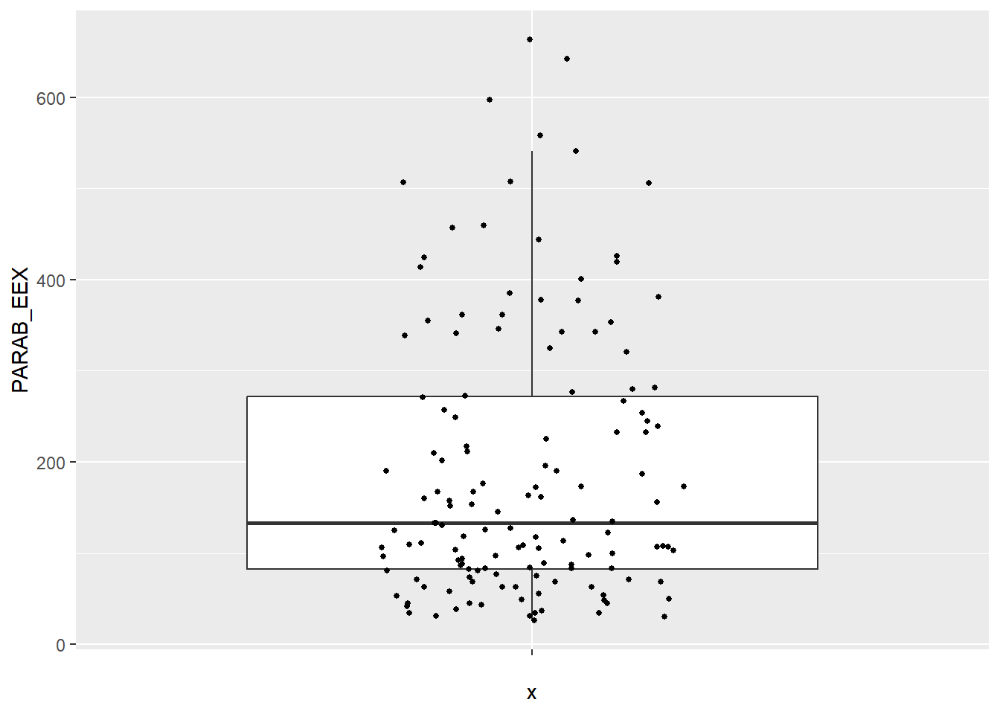
Όσον αφορά την παράμετρο shape= της
geom_jitter(), αυτή μας δίνει την επιλογή του σχήματος των
σημείων, η size= του μεγέθους και η position=
του πόσο απλωμένα θα είναι τα σημεία.
Ας υποθέσουμε τώρα ότι θέλουμε να φτιάξουμε ένα θηκόγραμμα για κάθε
έτος ξεχωριστά. Αυτό θα γίνει δίνοντας την οδηγία ο οριζόντιος άξονας
(x=) να έχει τα έτη (κι όχι να είναι κενός ενδείξεων,
γράφοντας x=""). Αν όμως γράψουμε:
## Warning: Continuous x aesthetic
## ℹ did you forget `aes(group = ...)`?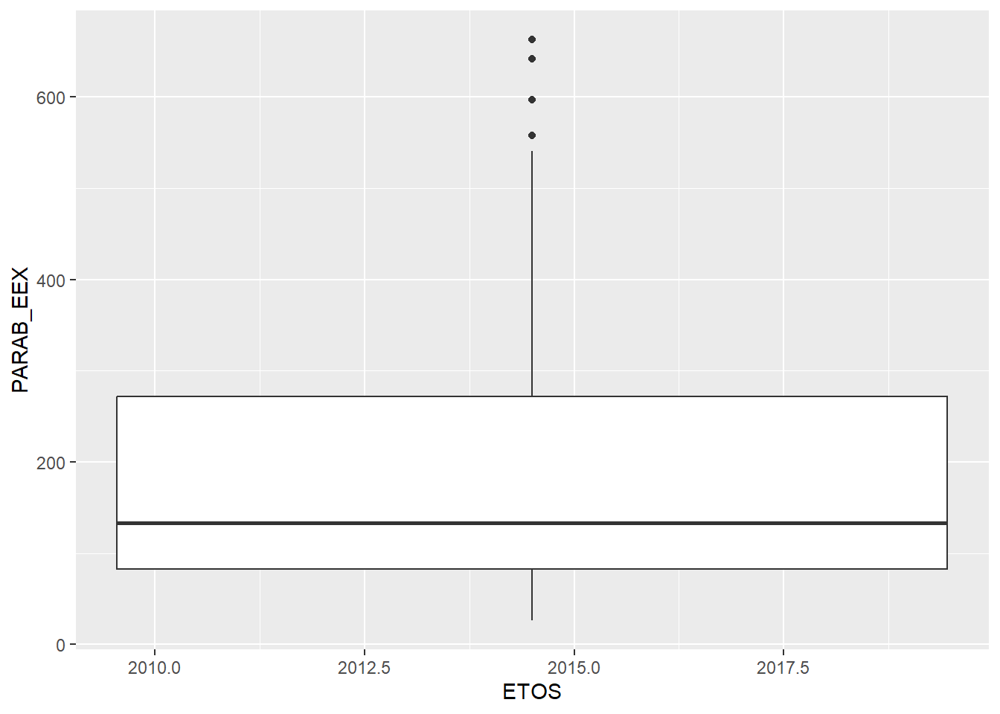
τότε ούτε προκύπτει το επιθυμητό αποτέλεσμα κι έχουμε και μήνυμα
σφάλαματος. Αυτό λόγω του ότι οι τιμές της στήλης ETOS
είναι αριθμητικές. Θα υπερβούμε αυτό το πρόβλημα μετατρέποντάς τες σε
χαρακτήρες, γράφοντας as.character(ETOS), δηλαδή:
ParabEEXboxEtos <- ggplot(enaerParab, aes(x=as.character(ETOS), y=PARAB_EEX))
ParabEEXboxEtos + geom_boxplot()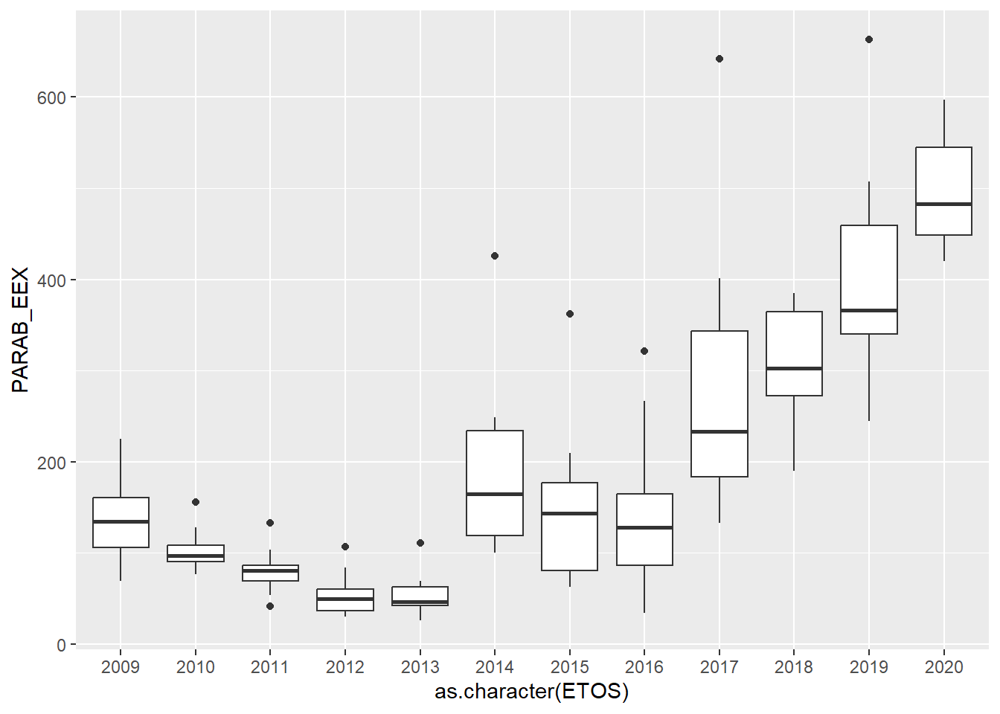
Φυσικά, αν θελήσουμε να υπάρχουν και σημεία συγχρόνως, γράφουμε:
ParabEEXboxEtos + geom_boxplot(outlier.shape = NA) + geom_jitter(shape=16, size=1,position=position_jitter(0.2))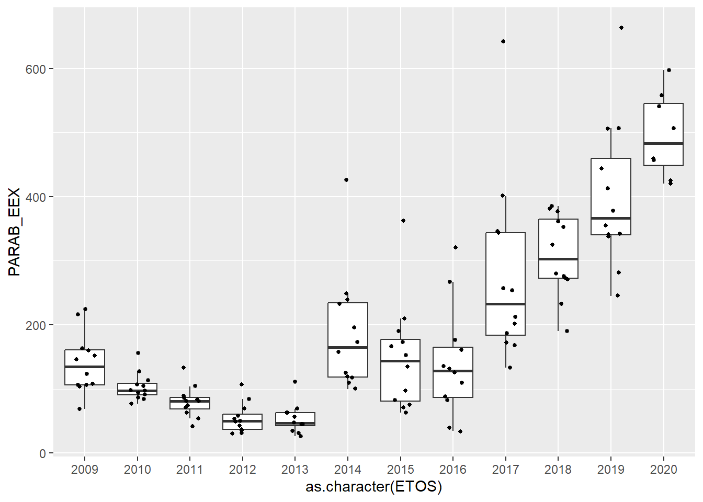
Πάνω στα τελευταία θηκογράμματα θα μπορούσαμε να κάναμε κάποιες
αισθητικές παρεμβάσεις μέσω των επιλογών color= και
fill=. Ας υποθέσουμε ότι φτιάχνουμε μια νέα σειρά από
θηκογράμματα με βάση τις παραβιάσεις του κάθε μήνα. Αυτό θα γίνει
γράφοντας αρχικά:
και ακολούθως:
ParabEEXboxMinas1 <- ggplot(enaerParab, aes(x=MHNAS, y=PARAB_EEX, color=MHNAS))
ParabEEXboxMinas1 + geom_boxplot() + xlim(mines)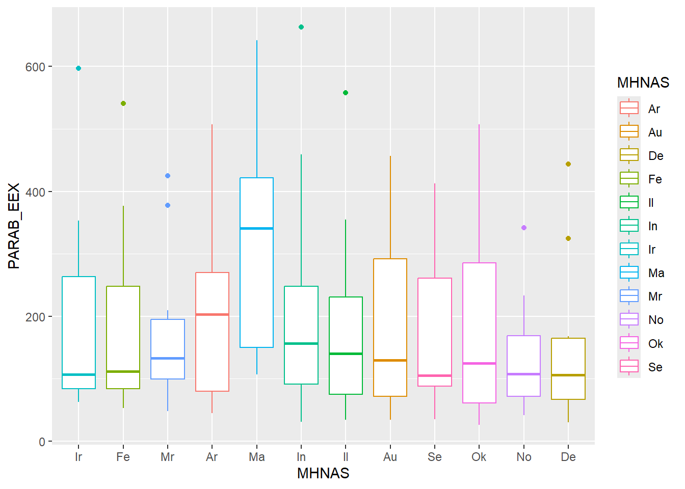
Όπου, φυσικά, η προσθήκη της xlim(mines) έγινε για να
μπουν οι μήνες στη σωστή σειρά.
Αν τώρα θέλουμε να διαφοροποιούνται βάσει του χρώματος γεμίσματος, γράφουμε:
ParabEEXboxMinas2 <- ggplot(enaerParab, aes(x=MHNAS, y=PARAB_EEX, fill=MHNAS))
ParabEEXboxMinas2 + geom_boxplot() + xlim(mines)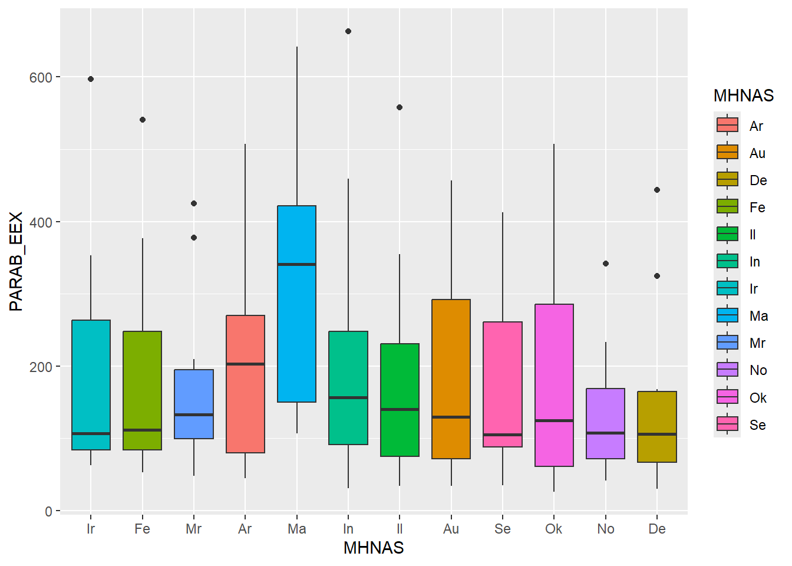
Ο κώδικας όλης αυτής της ενότητας είναι ο:
rm(list = ls())
mean(enaerParab$PARAB_EEX)
range(enaerParab$PARAB_EEX)
sd(enaerParab$PARAB_EEX)
sdPop <- function(x) sqrt(mean((x-mean(x))^ 2))
mean(enaerParab$PARAB_EEX)-3*sd(enaerParab$PARAB_EEX)
mean(enaerParab$PARAB_EEX)+3*sd(enaerParab$PARAB_EEX)
enaerParabApon <- enaerParab[enaerParab$PARAB_EEX>634.3057, ]
enaerParabApon
IQR(enaerParab$PARAB_EEX)
quantile(enaerParab$PARAB_EEX)
boxplot(enaerParab$PARAB_EEX)
boxplot(enaerParab$PARAB_EEX, horizontal=TRUE)
if(!require(ggplot2)){
install.packages("ggplot2")
library(ggplot2)
}
ParabEEXbox <- ggplot(enaerParab, aes(x="", y=PARAB_EEX))
ParabEEXbox + geom_boxplot()
ParabEEXbox + geom_boxplot() + coord_flip()
ParabEEXbox + geom_boxplot(outlier.shape = 0, outlier.size = 4)
ParabEEXbox + geom_boxplot() + geom_dotplot(binaxis='y', stackdir='center', dotsize=1)
ParabEEXbox + geom_boxplot() + geom_jitter(shape=16, size=1,position=position_jitter(0.2))
ParabEEXbox + geom_boxplot(outlier.shape = NA) + geom_jitter(shape=16, size=1,position=position_jitter(0.2))
ParabEEXboxEtos <- ggplot(enaerParab, aes(x=ETOS, y=PARAB_EEX))
ParabEEXboxEtos + geom_boxplot()
ParabEEXboxEtos <- ggplot(enaerParab, aes(x=as.character(ETOS), y=PARAB_EEX))
ParabEEXboxEtos + geom_boxplot()
ParabEEXboxEtos + geom_boxplot(outlier.shape = NA) + geom_jitter(shape=16, size=1,position=position_jitter(0.2))
mines <- c("Ir","Fe","Mr","Ar","Ma","In","Il","Au","Se","Ok","No","De")
ParabEEXboxMinas1 <- ggplot(enaerParab, aes(x=MHNAS, y=PARAB_EEX, color=MHNAS))
ParabEEXboxMinas1 + geom_boxplot() + xlim(mines)
ParabEEXboxMinas2 <- ggplot(enaerParab, aes(x=MHNAS, y=PARAB_EEX, fill=MHNAS))
ParabEEXboxMinas2 + geom_boxplot() + xlim(mines)